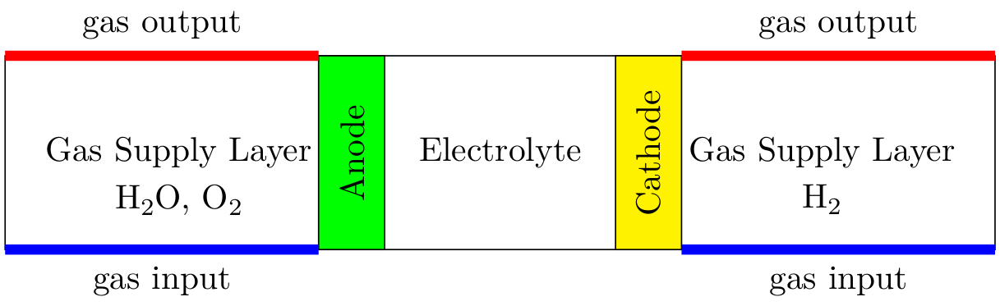
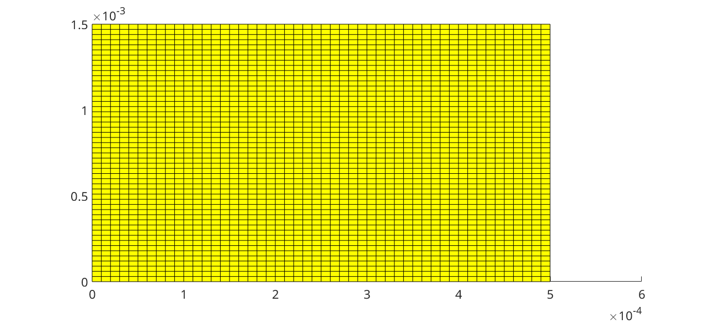
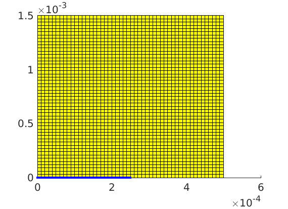
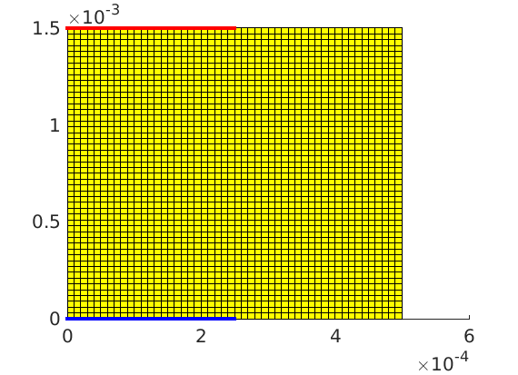
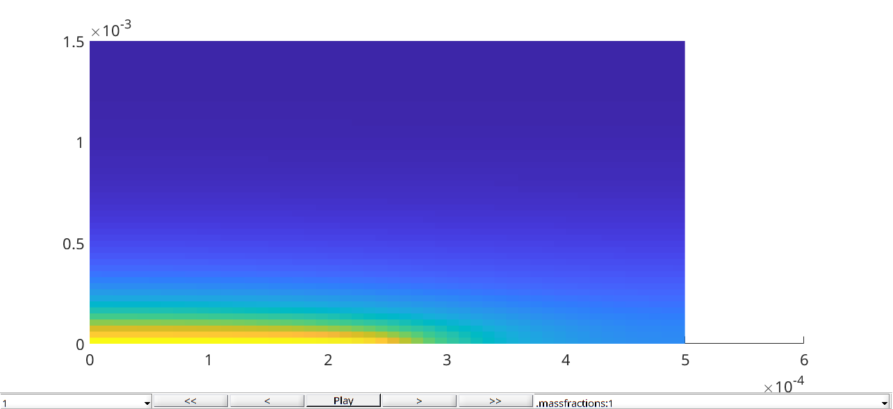
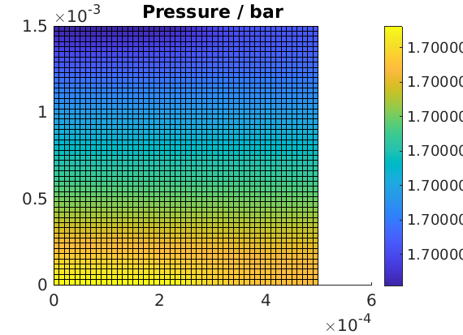
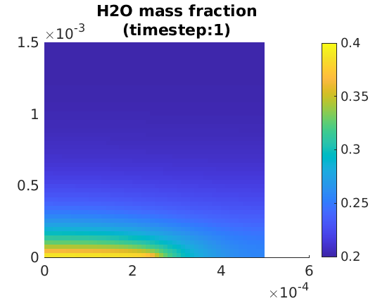
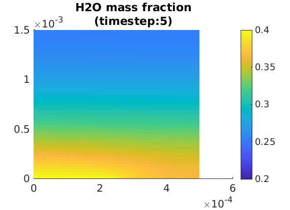
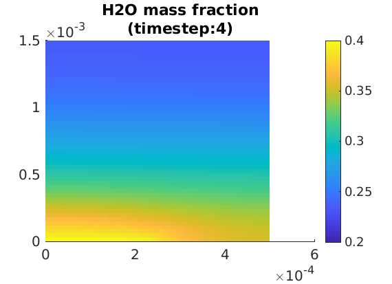
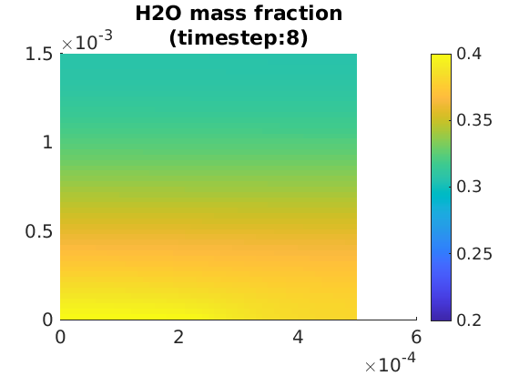

Gas Supply Layer
Generated from runGasSupply.m
Model overview
We present here a simulation model for a single gas layer. The complete electroyser has two such layers, see illustration below.
{kind=link}

Illustration of the electrolyser with the two gas layer domains
We consider the gas layer alone, without coupling with the electrodes. We will choose here the gas layer used at the anode. We inject a mixture of two gases (H2O and O2). We model the gas supply layer as a porous media. The flow is then driven by a pressure gradient and the effect of diffusion.
Governing equations
The governing equations are given by mass conservation. We have
where \(\rho\) denotes the density, \(x_i\) the mass fraction of the component \(i\), for \(i=\{1,2\}\). The convection and diffusion fluxes are denoted with \(j_{\text{conv},i}\) and \(j_{\text{diff}, i}\), respectively.
We use a simple equation of state for the gases, as we assume that they behave as ideal gas.
For the momentum equation, we use the Darcy approximation which covers the case of a flow in a porous media. The Darcy velocity is given by
where \(K\) denotes the permeability and \(mu\) the viscosity. We are working on a model which uses the Stokes equations, which can be used for a free flow.
The convection term for each species is given by
For the diffusion term, we use a Fick diffusion model and the diffusion flux for each component is given by
where \(c_i\) is the concentration of the specie \(i\) and \(\hat j_{\text{diff}, i}\) is the flux in \(mol/m^2/s\). We convert this flux in a mass flux, using the assumption that the gas are ideal gas, to obtain
Our governing equations can now be rewritten using the explicit expression for the fluxes,
This system of equation is discretized using finite volume and solved in time using backward Euler, for stability. The unknowns are the pressure and one of the mass fractions.
Boundary conditions
We have implemented boundary equations of three types, which can be used for both inlet and outlet:
total mass rate and composition
pressure and composition
pressure and zero mass fraction derivative condition
The boundary conditions are applied on a subset of external faces in the grid (see drawing below). The two first types of boundary conditions are standard.
When we impose the rate and composition, the given rate corresponds to the sum of all the input mass rates of every face which belongs to the boundary condition (It means that each boundary face individually can see different mass rates). A given composition corresponds to given mass fractions. This condition is use for the inlet in the example below, see json input here.
The pressure and composition boundary condition corresponds to a standard Dirichlet condition. We would typically use such condition at the outlet. Even for a convection dominated flow, the composition at the boundary is then given. This could then result in an artifact in the outlet region because, in an experimental setup, we do not control the composition directly at the outlet, and we do not want to model and simulate the flow outside the gas layer region. Therefore, we introduced the third boundary condition.
When we use a zero mass fraction derivative boundary condition, we impose that the derivative of the mass fraction in the normal direction at the boundary is zero, \(\frac{\partial x_i}{\partial n} = 0\). In this way, we model a situation where the outlet is connected to a long pipe which is itself connected to the ambient room, where we have a given composition. In the pipe, the flow is dominated by convection and we cannot observe the separation effect of diffusion (due to the difference in the value of the diffusion coefficient for each specie) at the beginning of the pipe . Hence, the vanishing condition of the derivative of the mass fractions. This condition is implemented in the example below, see here.
json input data
We load the input data that is given by json structures. The physical properties of the supply gas layer is given in the json file gas-supply.json
filename = fullfile(battmoDir(), 'ProtonicMembrane', 'jsonfiles', 'gas-supply.json');
jsonstruct_material = parseBattmoJson(filename);
The geometry input is loaded from 2d-gas-layer-geometry.json
filename = fullfile(battmoDir(), 'ProtonicMembrane', 'jsonfiles', '2d-gas-layer-geometry.json');
jsonstruct_geometry = parseBattmoJson(filename);
The input for the initial state is loaded from gas-supply-initialization.json
filename = fullfile(battmoDir(), 'ProtonicMembrane', 'jsonfiles', 'gas-supply-initialization.json');
jsonstruct_initialization = parseBattmoJson(filename);
jsonstruct = mergeJsonStructs({jsonstruct_material, ...
jsonstruct_geometry, ...
jsonstruct_initialization});
Input parameter setup
We setup the input parameter structure which will we be used to instantiate the model
inputparams = ProtonicMembraneGasSupplyInputParams(jsonstruct);
We setup the grid, which is done by calling the function setupProtonicMembraneGasLayerGrid
[inputparams, gridGenerator] = setupProtonicMembraneGasLayerGrid(inputparams, jsonstruct);
Model setup
We instantiate the model for the gas supply layer
model = ProtonicMembraneGasSupply(inputparams);
The model is equipped for simulation using the following command (this step may become unnecessary in future versions)
model = model.setupForSimulation();
Model Plot
We plot the simulation grid
G = model.grid;
plotGrid(G);

The boundary conditions have been given by the input json file, see gas-supply.json. In this case we have rate control at the inlet at the bottom, and pressure control at the outlet at the top.
The index of the faces for the inlet and outlet are stored in a couplingTerm structure (see here for the base class). Those have been assigned when the grid is setup (for this example we have used GasSupplyGridGenerator2D).
We plot the inlet faces.
coupTerm = model.couplingTerms{1};
plotFaces(G, coupTerm.couplingfaces, 'edgecolor', 'blue', 'linewidth', 3)

We plot the outlet faces.
coupTerm = model.couplingTerms{2};
plotFaces(G, coupTerm.couplingfaces, 'edgecolor', 'red', 'linewidth', 3)

Setup initial state
The model provides us with a default initialization
initstate = model.setupInitialState(jsonstruct);
Schedule setup
The schedule structure constains two fields step, control, which gives respectively the time steps and the control to be applied.
T = 1e-2*second;
N = 10;
dt = rampupTimesteps(T, T/N, 1);
step.val = dt;
step.control = ones(numel(step.val), 1);
control.src = []; % The control is taking care of by a dedicated submobel. Hence, the empty field here.
schedule = struct('control', control, 'step', step);
Simulation
We start the simulation
[~, states, report] = simulateScheduleAD(initstate, model, schedule);
Result plots
To analyse the result, we can use the interactive plotToolbar command (see here)
figure
plotToolbar(model.grid, states);
%
%

We plot the pressure at the final step.
set(0, 'defaultlinelinewidth', 3);
set(0, 'defaultaxesfontsize', 15);
state = states{end};
G = model.grid;
figure
plotCellData(G, state.pressure/barsa);
colorbar
title('Pressure / bar');

We plot the water mass fractions at three different time step
inds = [1; 2; 4; 8];
ninds = numel(inds);
for i = 1 : ninds
figure
state = states{inds(i)};
plotCellData(G, state.massfractions{1}, 'edgecolor', 'none');
clim([0.2, 0.4]);
title(sprintf('H2O mass fraction\n(timestep:%d)', inds(i)));
colorbar
end




complete source code can be found here